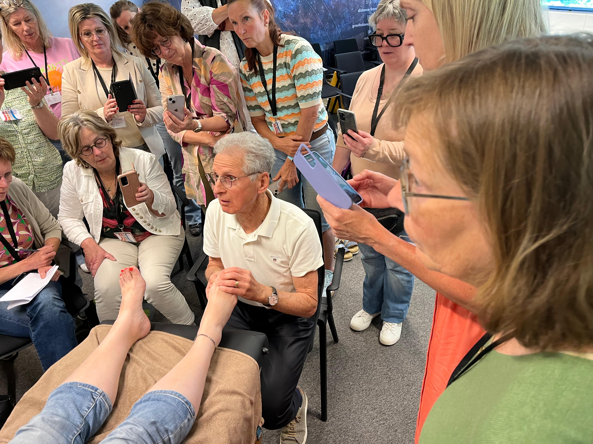
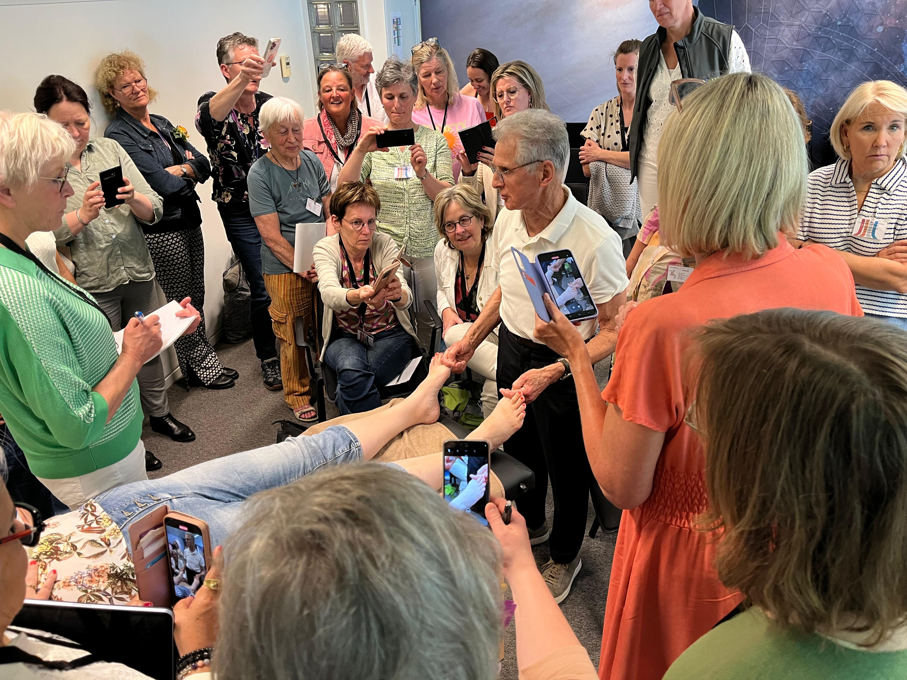
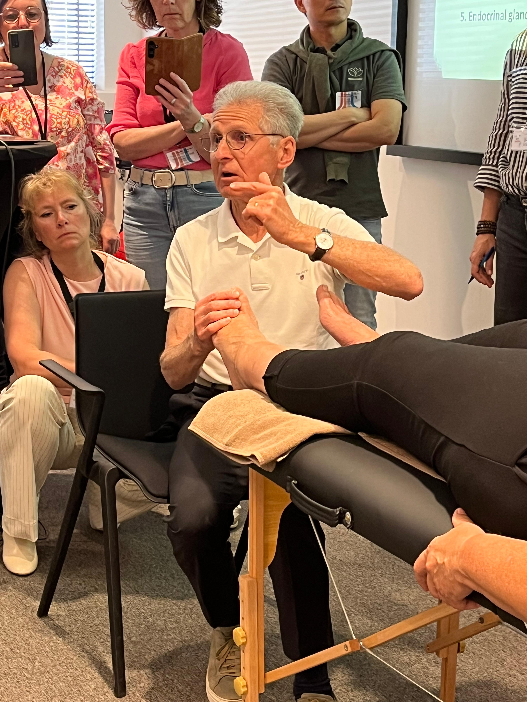
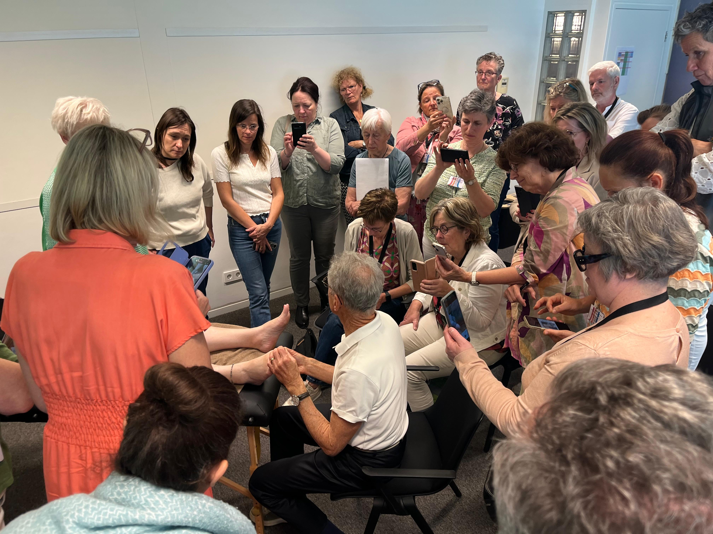
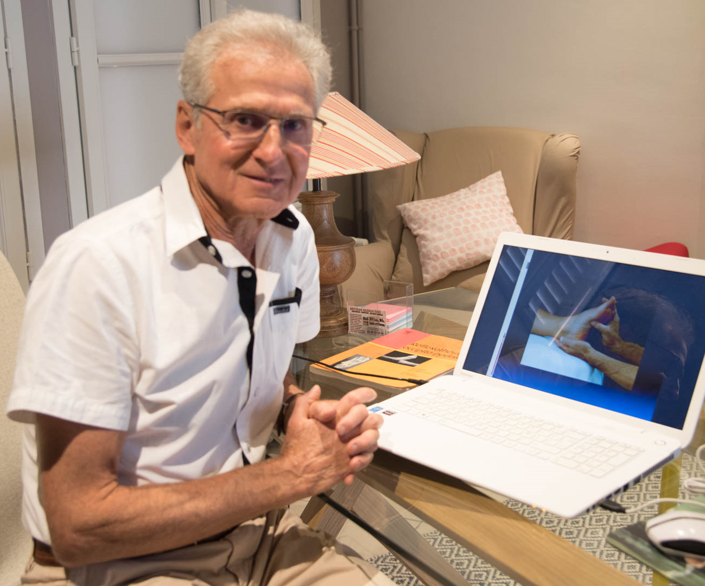

Système nerveux, viscères & stress —
une lecture clinique en Réflexologie
Occipito-Podale





Guy Boitout est le fondateur de la Réflexologie Occipito-Podale (R.O.P.), une technique de massage basée sur la représentation tridimensionnelle du corps sur le pied et l'occiput. Depuis plus de trente ans, il enseigne et diffuse cette approche à travers l'Institut de Formation R.O.P., basé à Sully-sur-Loire.
Kinésithérapeute de formation, il découvre la réflexologie (méthode Ingham) en 1978, puis l'ostéopathie viscérale avec Jean-Pierre Barral — deux étapes décisives qui l'amèneront, avec Jean-Pierre Vadala, à créer la cartographie réflexe R.O.P. en 3D, publiée aux Éditions Elsevier-Masson.
Ses formations sont agréées pour la formation continue (numéro d'agrément 24450434645, préfecture du Centre-Val de Loire) et s'adressent aux réflexothérapeutes, ostéopathes, kinésithérapeutes et professionnels de santé.
Ce troisième volume s'inscrit dans la continuité de ce qui fait l'originalité de la Réflexothérapie Occipito-Podale : une représentation globale du corps en 3D sous la forme d'un bébé en position fœtale dans les pieds, les zones réflexes occipitales, et une référence constante à l'anatomie et à la physiologie.
Après un premier livre consacré au système ostéo-musculo-articulaire et un deuxième centré sur les nerfs somatiques spinaux et crâniens, cet ouvrage aborde le système nerveux autonome, le mécanisme de stress et les viscères abdominaux — le cœur invisible de la régulation du corps.
"Il ne pouvait en être autrement en réflexologie. Comme en ostéopathie viscérale, le système neurovégétatif est au cœur de tout : c'est lui qui gouverne, régule et restaure — et c'est lui que la R.O.P. cherche à atteindre en priorité."— Guy Boitout · Préface du 3ᵉ ouvrage
De la préface personnelle aux viscères abdominaux, l'ouvrage construit une progression logique en quatre grandes parties. Chaque couche s'appuie sur la précédente pour offrir au praticien une compréhension clinique complète et opérationnelle.
De la préface personnelle de l'auteur aux viscères abdominaux — ces extraits présentent le contenu du livre. L'accès se fait désormais par format complet : Livre en ligne ou Livre en ligne + Livre imprimé.
La voix de l'auteur : de la kinésithérapie à la réflexologie (méthode Ingham, 1978), puis à l'ostéopathie viscérale (J.-P. Barral) jusqu'à la création de la R.O.P. avec Jean-Pierre Vadala. L'ADN de la méthode en quelques pages denses et personnelles.
Le cadre mécanique et neurophysiologique du praticien : mobilité vs motilité, quatre moteurs viscéraux (somatique, autonome, motilité intrinsèque, biorythmes), turgor, pressions intra-cavitaires et glissement des séreuses.
Le protocole clinique complet : technique gestuelle (pulpe du pouce), dosage textural (peau de tambour), les 3 temps d'une séance, et la hiérarchisation du traitement — Syndrome général → Loco-régional → Limbique. Bases neurophysiologiques.
Des trois cerveaux de MacLean à la formation réticulaire : tronc cérébral, cervelet, système limbique et cortex, ganglions de la base et neurotransmetteurs. Zones réflexes podales et occipitales pour chaque structure cérébrale.
Parasympathique et Sympathique : fonctions, homéostasie, relation SNA-sommeil, système nerveux entérique. Le nerf vague — 70 à 80 % de fibres sensitives afférentes — et son rôle anti-inflammatoire. Cadre clinique des déséquilibres neurovégétatifs en R.O.P.
De l'homéostasie de Walter Cannon au syndrome général d'adaptation de Hans Selye : distress, eustress, stresseurs physiques, biochimiques et émotionnels. Rôle central du SNA et du système limbique — et interventions R.O.P.
Le Dr Stephen Porges : trois niveaux phylogénétiques du SNA — immobilisation (vagal ancien), mobilisation (sympathique), engagement social (vagal nouveau). Implications cliniques pour la régulation du nerf vague en R.O.P.
Architecture complète de la cavité abdominale : péritoine, espaces intra-, rétro- et sous-péritonéaux, fascias et mésos. Influence des variations de pression thoracique sur les viscères. Lecture clinique R.O.P. des contraintes mécaniques fasciales.
Le diaphragme comme moteur respiratoire (~16/min, dizaines de milliers de cycles/24h), viscéral et veino-lymphatique. Attaches diaphragmatiques, hiatus œsophagien, gradient de pression et retour veineux. Applications R.O.P.
Anatomie complète de l'estomac (forme en J, quatre segments, SIO, cardia, fundus, pylore), physiologie de la digestion en milieu acide, impact du stress sur la sécrétion gastrique, et composante émotionnelle de l'organe en R.O.P.
Le duodénum en U (≈ 25 cm) : quatre segments D1 à D4, papilles duodénales, sphincter d'Oddi, abouchement bilio-pancréatique. Conflit aorto-mésentérique, impact du stress sur la muqueuse, et protocole R.O.P. pour la motricité duodénale.
Anatomie du jéjunum-iléum et du mésentère avec lecture R.O.P. : racine mésentérique comme zone hautement réflexogène, nutcracker syndrome, axe intestin-cerveau, microbiote et immunité. Cartographies réflexes incluses.
Le Chapitre 2 est le cœur opérationnel de l'ouvrage : il décrit précisément le geste, le dosage textural, et la logique de traitement hiérarchisée.
Traiter d'abord le terrain, puis la zone symptomatique, puis si nécessaire la composante limbique.
Le chapitre sur le mécanisme de stress est mis en accès libre pour découvrir la rigueur pédagogique et la profondeur clinique de cet ouvrage.
Il couvre l'intégralité du parcours stress : de l'homéostasie à l'allostasie, des stresseurs physiques aux stresseurs biochimiques, et les interventions concrètes en R.O.P.
Chapitre 5 · PDF · 30+ pages · Références bibliographiques inclusesMécanisme de stress — PDF · Accès immédiat après inscription
Vos données ne seront jamais partagées. Désabonnement possible à tout moment.
Le lien de téléchargement a été envoyé à votre adresse e-mail.
⬇ Télécharger le Chapitre 5 (PDF)Vérifiez aussi votre dossier spam.
"La mobilité viscérale est rendue possible par quatre grands moteurs : le système nerveux somatique, le système nerveux autonome, la motilité intrinsèque et les biorythmes. Leur interaction définit le terrain clinique du praticien."
Chapitre 1 — Généralités"Force et trituration sont proscrites : on perd la lecture fine, les repères osseux deviennent moins nets, et on crée un stress tissulaire inutile. Le geste juste, c'est la pression progressive, brève, orientée."
Chapitre 2 — Protocole R.O.P."Notre rôle en R.O.P. est de favoriser la régulation du nerf vague. Ce qui se passe dans le corps peut influencer et s'accompagner de variations de notre état mental et émotionnel."
Chapitre 6 — Théorie polyvagaleDeux formats d'accès à l'ouvrage complet : lecture en ligne immédiate, ou formule combinée numérique + imprimée.
Accès immédiat à l'ouvrage complet en format numérique, avec consultation permanente.
La formule complète avec accès numérique immédiat et version imprimée du livre.